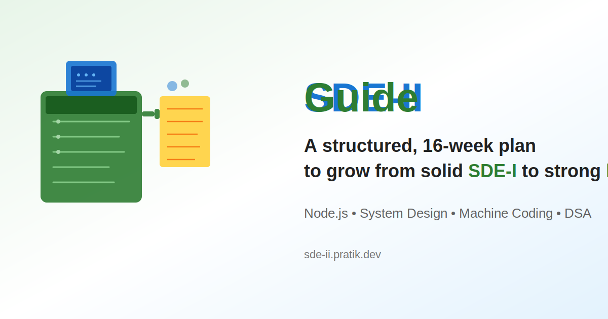

How to generate the social card image:
Right-click on the image below
Select "Save Image As..." or "Copy Image"
Save as
sde-ii-social-card.jpg
or
sde-ii-social-card.png
Or use a browser extension to capture the exact dimensions (1200x630)
